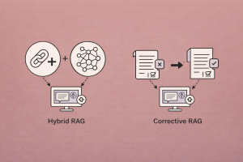

graph LR
Q["Query"] --> R["Retrieve<br/>(always)"]
R --> D["Top-K Docs<br/>(trust blindly)"]
D --> G["Generate<br/>(hope for the best)"]
G --> A["Answer"]
style R fill:#f99,stroke:#c00
style D fill:#f99,stroke:#c00
Hybrid and Corrective RAG Architectures
Self-RAG, CRAG, Adaptive RAG, and query routing — building RAG systems that know when to retrieve, when to skip, and when to self-correct
Keywords
Self-RAG, CRAG, Corrective RAG, Adaptive RAG, query routing, self-reflection, retrieval evaluation, document grading, hallucination detection, LangGraph, LlamaIndex, web search fallback, reflection tokens, flow engineering, state machine, conditional retrieval

Introduction
Standard RAG pipelines have a fundamental flaw: they retrieve every time, regardless of whether retrieval is needed, and they trust every retrieved document, regardless of whether it’s relevant. Ask a simple factual question the LLM already knows? It retrieves anyway. Ask a question where the retrieved documents are all off-topic? It generates from them anyway. The result is wasted compute on easy queries and hallucinated answers on hard ones.
A new generation of RAG architectures fixes this by adding self-correction loops and adaptive retrieval decisions. Instead of a rigid retrieve-then-generate pipeline, these systems ask: Should I retrieve at all? Are the retrieved documents relevant? Is my generated answer faithful to the evidence? Should I try again with a different query?
Three papers define this space:
- Self-RAG (Asai et al., 2023) — Trains the LLM to generate special reflection tokens that govern when to retrieve, whether documents are relevant, and whether the generation is supported by evidence
- CRAG (Yan et al., 2024) — Adds a lightweight retrieval evaluator that grades document quality and triggers web search as a corrective fallback
- Adaptive RAG (Jeong et al., 2024) — Routes queries to different retrieval strategies (no retrieval, single-step, multi-step) based on query complexity
This article covers the architecture, intuition, and practical implementation of each approach, with working code using LangGraph and LlamaIndex.
The Problem with Standard RAG
Standard RAG has three failure modes:
| Failure Mode | Example | Consequence |
|---|---|---|
| Unnecessary retrieval | “What is 2+2?” → retrieves 5 documents | Wasted latency and cost |
| Irrelevant retrieval | Query about quantum computing → retrieves cooking recipes | Hallucinated answer from wrong context |
| Unfaithful generation | Correct docs retrieved, but LLM ignores them or fabricates details | Answer not grounded in evidence |
Corrective RAG architectures address all three by adding decision points and feedback loops:
graph TD
Q["Query"] --> D{"Need<br/>Retrieval?"}
D -->|No| GD["Generate Directly"]
D -->|Yes| R["Retrieve Documents"]
R --> GR{"Docs<br/>Relevant?"}
GR -->|Yes| G["Generate from Docs"]
GR -->|Ambiguous| WS["Web Search<br/>+ Retrieve"]
GR -->|No| RW["Rewrite Query"]
RW --> R
WS --> G
G --> HC{"Answer<br/>Faithful?"}
HC -->|Yes| A["Final Answer ✅"]
HC -->|No| RW
style A fill:#9f9,stroke:#0a0
style GR fill:#ffd,stroke:#aa0
style HC fill:#ffd,stroke:#aa0
Self-RAG: Learning to Retrieve, Generate, and Critique
Self-RAG (Asai et al., 2023) takes the most radical approach: it trains the LLM itself to generate reflection tokens that control the RAG pipeline. Instead of bolting on external components, the model learns when to retrieve, what is relevant, and whether its own generation is supported by evidence.
Reflection Tokens
Self-RAG introduces four special tokens into the LLM’s vocabulary:
| Token | Input | Output | Purpose |
|---|---|---|---|
[Retrieve] |
Query (or query + partial generation) | yes, no, continue |
Decides whether to retrieve |
[ISREL] |
Query + single document | relevant, irrelevant |
Grades document relevance |
[ISSUP] |
Query + document + generation | fully supported, partially supported, no support |
Checks if generation is grounded |
[ISUSE] |
Query + generation | Score 1–5 | Rates overall answer utility |
Architecture
graph TD
Q["Query"] --> RT{"[Retrieve]<br/>Token"}
RT -->|"no"| GEN1["Generate<br/>(no retrieval)"]
RT -->|"yes"| RET["Retrieve Top-K"]
RET --> REL{"[ISREL]<br/>per document"}
REL -->|"relevant"| GEN2["Generate from<br/>relevant docs"]
REL -->|"irrelevant"| FILTER["Filter out"]
GEN2 --> SUP{"[ISSUP]<br/>grounding check"}
SUP -->|"supported"| USE{"[ISUSE]<br/>utility score"}
SUP -->|"not supported"| RETRY["Rewrite +<br/>Re-retrieve"]
USE -->|"score ≥ 4"| ANS["Final Answer ✅"]
USE -->|"score < 4"| RETRY
RETRY --> RET
style RT fill:#F2F2F2,stroke:#D9D9D9
style REL fill:#F2F2F2,stroke:#D9D9D9
style SUP fill:#F2F2F2,stroke:#D9D9D9
style USE fill:#F2F2F2,stroke:#D9D9D9
style ANS fill:#9f9,stroke:#0a0
Key Insight: Inference-Time Control
Because reflection tokens are generated by the model, you can adjust retrieval behavior at inference time by changing the probability weights on these tokens:
- More retrieval → increase weight on
[Retrieve: yes]→ better for knowledge-intensive QA - Less retrieval → decrease weight → better for creative or conversational tasks
- Stricter grounding → increase weight on
[ISSUP: fully supported]→ higher citation accuracy but less fluent
Self-RAG Implementation with LangGraph
While the original Self-RAG trains custom reflection tokens into the model, we can approximate its logic using an LLM-as-judge approach with LangGraph:
from typing import TypedDict, Literal
from langgraph.graph import StateGraph, END
from langchain_openai import ChatOpenAI
from langchain_core.prompts import ChatPromptTemplate
from langchain_core.output_parsers import StrOutputParser
from langchain_community.vectorstores import FAISS
llm = ChatOpenAI(model="gpt-4o-mini", temperature=0)
class RAGState(TypedDict):
question: str
documents: list[str]
generation: str
retries: int
# Node: Decide whether retrieval is needed
def route_question(state: RAGState) -> Literal["retrieve", "generate_direct"]:
prompt = ChatPromptTemplate.from_template(
"Given this question, does it require external knowledge retrieval "
"to answer accurately, or can it be answered from general knowledge?\n\n"
"Question: {question}\n\n"
"Answer with ONLY 'retrieve' or 'generate_direct'."
)
chain = prompt | llm | StrOutputParser()
decision = chain.invoke({"question": state["question"]}).strip().lower()
return "retrieve" if "retrieve" in decision else "generate_direct"
# Node: Retrieve documents
def retrieve(state: RAGState) -> RAGState:
retriever = vectorstore.as_retriever(search_kwargs={"k": 5})
docs = retriever.invoke(state["question"])
return {**state, "documents": [d.page_content for d in docs]}
# Node: Grade documents for relevance
def grade_documents(state: RAGState) -> RAGState:
prompt = ChatPromptTemplate.from_template(
"Is this document relevant to the question?\n\n"
"Question: {question}\nDocument: {document}\n\n"
"Answer with ONLY 'relevant' or 'irrelevant'."
)
chain = prompt | llm | StrOutputParser()
relevant_docs = []
for doc in state["documents"]:
grade = chain.invoke({"question": state["question"], "document": doc})
if "relevant" in grade.strip().lower():
relevant_docs.append(doc)
return {**state, "documents": relevant_docs}
# Node: Generate answer
def generate(state: RAGState) -> RAGState:
context = "\n\n".join(state["documents"])
prompt = ChatPromptTemplate.from_template(
"Answer the question using ONLY the provided context.\n\n"
"Context:\n{context}\n\nQuestion: {question}\n\nAnswer:"
)
chain = prompt | llm | StrOutputParser()
answer = chain.invoke({"context": context, "question": state["question"]})
return {**state, "generation": answer}
# Node: Generate without retrieval
def generate_direct(state: RAGState) -> RAGState:
prompt = ChatPromptTemplate.from_template(
"Answer this question concisely:\n\n{question}"
)
chain = prompt | llm | StrOutputParser()
answer = chain.invoke({"question": state["question"]})
return {**state, "generation": answer}
# Node: Check if generation is grounded in documents
def check_hallucination(state: RAGState) -> Literal["supported", "not_supported"]:
if not state["documents"]:
return "supported"
context = "\n\n".join(state["documents"])
prompt = ChatPromptTemplate.from_template(
"Is the following answer fully supported by the provided documents?\n\n"
"Documents:\n{context}\n\nAnswer: {generation}\n\n"
"Respond with ONLY 'supported' or 'not_supported'."
)
chain = prompt | llm | StrOutputParser()
result = chain.invoke({
"context": context,
"generation": state["generation"],
})
return "supported" if "supported" in result.strip().lower() else "not_supported"
# Node: Rewrite query for re-retrieval
def rewrite_query(state: RAGState) -> RAGState:
prompt = ChatPromptTemplate.from_template(
"The previous retrieval did not yield good results for this question. "
"Rewrite the question to improve retrieval:\n\n"
"Original: {question}\n\nRewritten:"
)
chain = prompt | llm | StrOutputParser()
new_question = chain.invoke({"question": state["question"]})
return {**state, "question": new_question, "retries": state["retries"] + 1}
# Edge: Route after document grading
def route_after_grading(state: RAGState) -> Literal["generate", "rewrite"]:
if state["documents"]:
return "generate"
if state["retries"] < 2:
return "rewrite"
return "generate" # give up after 2 retries
# Build the graph
workflow = StateGraph(RAGState)
workflow.add_node("retrieve", retrieve)
workflow.add_node("grade_documents", grade_documents)
workflow.add_node("generate", generate)
workflow.add_node("generate_direct", generate_direct)
workflow.add_node("rewrite_query", rewrite_query)
# Set conditional entry point
workflow.set_conditional_entry_point(
route_question,
{"retrieve": "retrieve", "generate_direct": "generate_direct"},
)
workflow.add_edge("retrieve", "grade_documents")
workflow.add_conditional_edges(
"grade_documents",
route_after_grading,
{"generate": "generate", "rewrite": "rewrite_query"},
)
workflow.add_edge("rewrite_query", "retrieve")
workflow.add_conditional_edges(
"generate",
check_hallucination,
{"supported": END, "not_supported": "rewrite_query"},
)
workflow.add_edge("generate_direct", END)
app = workflow.compile()
# Run
result = app.invoke({
"question": "What are the side effects of metformin?",
"documents": [],
"generation": "",
"retries": 0,
})
print(result["generation"])CRAG: Corrective Retrieval Augmented Generation
CRAG (Yan et al., 2024) takes a more modular, plug-and-play approach. Instead of training special tokens into the LLM, it adds a lightweight retrieval evaluator that assesses retrieved document quality and triggers corrective actions.
The Three-Action Framework
CRAG’s evaluator scores each retrieved document’s relevance and returns a confidence level. Based on the aggregate confidence, one of three actions is triggered:
graph TD
Q["Query"] --> R["Retrieve from<br/>Vector Store"]
R --> E["Retrieval<br/>Evaluator"]
E --> C{"Confidence<br/>Level?"}
C -->|"Correct<br/>(high confidence)"| KR1["Knowledge Refinement<br/>(strip irrelevant)"]
C -->|"Ambiguous<br/>(medium confidence)"| BOTH["Knowledge Refinement<br/>+<br/>Web Search"]
C -->|"Incorrect<br/>(low confidence)"| WS["Web Search<br/>(replace all docs)"]
KR1 --> G["Generate"]
BOTH --> G
WS --> G
G --> A["Answer"]
style C fill:#ffd,stroke:#aa0
style WS fill:#f99,stroke:#c00
style KR1 fill:#9f9,stroke:#0a0
style BOTH fill:#ffd,stroke:#aa0
| Confidence | Action | Description |
|---|---|---|
| Correct | Refine | Decompose docs into knowledge strips, filter irrelevant strips, use refined knowledge |
| Ambiguous | Refine + Web Search | Keep refined local docs AND supplement with web search results |
| Incorrect | Web Search | Discard all retrieved docs, query the web for fresh information |
Knowledge Refinement
CRAG’s knowledge refinement is a post-retrieval processing step:
- Decompose each retrieved document into fine-grained “knowledge strips” (roughly sentence-level)
- Score each strip for relevance to the query
- Filter out low-relevance strips
- Recompose the remaining strips into a clean, focused context
This ensures that even when a document is partially relevant, only the useful portions reach the generator.
CRAG Implementation with LangGraph
from typing import TypedDict, Literal
from langgraph.graph import StateGraph, END
from langchain_openai import ChatOpenAI
from langchain_core.prompts import ChatPromptTemplate
from langchain_core.output_parsers import StrOutputParser
from langchain_community.tools.tavily_search import TavilySearchResults
llm = ChatOpenAI(model="gpt-4o-mini", temperature=0)
web_search = TavilySearchResults(max_results=3)
class CRAGState(TypedDict):
question: str
documents: list[str]
web_results: list[str]
confidence: str
generation: str
# Node: Retrieve from vector store
def retrieve(state: CRAGState) -> CRAGState:
retriever = vectorstore.as_retriever(search_kwargs={"k": 5})
docs = retriever.invoke(state["question"])
return {**state, "documents": [d.page_content for d in docs]}
# Node: Evaluate retrieval quality
def evaluate_retrieval(state: CRAGState) -> CRAGState:
prompt = ChatPromptTemplate.from_template(
"Evaluate whether the following documents are relevant to the question.\n\n"
"Question: {question}\n\n"
"Documents:\n{documents}\n\n"
"Rate the overall retrieval quality as one of:\n"
"- 'correct': Documents clearly answer the question\n"
"- 'ambiguous': Documents are partially relevant\n"
"- 'incorrect': Documents are not relevant at all\n\n"
"Respond with ONLY one word: correct, ambiguous, or incorrect."
)
chain = prompt | llm | StrOutputParser()
docs_text = "\n---\n".join(state["documents"])
confidence = chain.invoke({
"question": state["question"],
"documents": docs_text,
}).strip().lower()
if confidence not in ("correct", "ambiguous", "incorrect"):
confidence = "ambiguous"
return {**state, "confidence": confidence}
# Router based on confidence
def route_on_confidence(state: CRAGState) -> Literal["refine", "refine_and_search", "web_search"]:
conf = state["confidence"]
if conf == "correct":
return "refine"
elif conf == "ambiguous":
return "refine_and_search"
else:
return "web_search"
# Node: Knowledge refinement — filter irrelevant strips
def refine_knowledge(state: CRAGState) -> CRAGState:
prompt = ChatPromptTemplate.from_template(
"Given the question, extract ONLY the sentences from these documents "
"that are directly relevant. Remove all irrelevant information.\n\n"
"Question: {question}\n\n"
"Documents:\n{documents}\n\n"
"Relevant extracts:"
)
chain = prompt | llm | StrOutputParser()
docs_text = "\n---\n".join(state["documents"])
refined = chain.invoke({
"question": state["question"],
"documents": docs_text,
})
return {**state, "documents": [refined]}
# Node: Web search
def search_web(state: CRAGState) -> CRAGState:
results = web_search.invoke(state["question"])
web_docs = [r["content"] for r in results if "content" in r]
return {**state, "web_results": web_docs}
# Node: Combine refined + web results
def combine_sources(state: CRAGState) -> CRAGState:
all_docs = state["documents"] + state.get("web_results", [])
return {**state, "documents": all_docs}
# Node: Web search replaces all docs
def web_search_only(state: CRAGState) -> CRAGState:
results = web_search.invoke(state["question"])
web_docs = [r["content"] for r in results if "content" in r]
return {**state, "documents": web_docs}
# Node: Generate answer
def generate(state: CRAGState) -> CRAGState:
context = "\n\n".join(state["documents"])
prompt = ChatPromptTemplate.from_template(
"Answer the question using the provided context.\n\n"
"Context:\n{context}\n\nQuestion: {question}\n\nAnswer:"
)
chain = prompt | llm | StrOutputParser()
answer = chain.invoke({"context": context, "question": state["question"]})
return {**state, "generation": answer}
# Build the CRAG graph
workflow = StateGraph(CRAGState)
workflow.add_node("retrieve", retrieve)
workflow.add_node("evaluate", evaluate_retrieval)
workflow.add_node("refine", refine_knowledge)
workflow.add_node("search_web", search_web)
workflow.add_node("combine", combine_sources)
workflow.add_node("web_only", web_search_only)
workflow.add_node("generate", generate)
workflow.set_entry_point("retrieve")
workflow.add_edge("retrieve", "evaluate")
workflow.add_conditional_edges(
"evaluate",
route_on_confidence,
{
"refine": "refine",
"refine_and_search": "search_web",
"web_search": "web_only",
},
)
workflow.add_edge("refine", "generate")
workflow.add_edge("search_web", "combine")
workflow.add_edge("combine", "generate")
workflow.add_edge("web_only", "generate")
workflow.add_edge("generate", END)
app = workflow.compile()
result = app.invoke({
"question": "What are the latest FDA-approved treatments for Alzheimer's?",
"documents": [],
"web_results": [],
"confidence": "",
"generation": "",
})
print(result["generation"])Adaptive RAG: Routing by Query Complexity
Adaptive RAG (Jeong et al., 2024) addresses a different problem: not all queries need the same retrieval strategy. A simple factual question (“What is the capital of France?”) doesn’t need multi-step retrieval, while a complex reasoning question (“Compare the economic policies of France and Germany in the post-war era”) might need iterative retrieval and synthesis.
The Complexity Classifier
Adaptive RAG trains a small classifier to categorize queries into complexity levels:
graph TD
Q["Incoming Query"] --> CL["Complexity<br/>Classifier"]
CL -->|"Simple"| NR["No Retrieval<br/>(LLM only)"]
CL -->|"Medium"| SR["Single-Step<br/>RAG"]
CL -->|"Complex"| MR["Multi-Step<br/>Iterative RAG"]
NR --> A["Answer"]
SR --> A
MR --> A
style CL fill:#F2F2F2,stroke:#D9D9D9
style NR fill:#d4edda,stroke:#28a745
style SR fill:#ffd,stroke:#aa0
style MR fill:#f8d7da,stroke:#dc3545
| Complexity | Strategy | Example |
|---|---|---|
| Simple (A) | No retrieval — LLM answers directly | “What year was Python created?” |
| Medium (B) | Single-step retrieval — standard RAG | “Explain Python’s GIL mechanism” |
| Complex (C) | Multi-step iterative retrieval — chain multiple queries | “Compare Python’s concurrency model with Go’s goroutines and Rust’s async/await” |
Training the Classifier
The key insight: labels for training can be automatically derived from model outcomes:
- If the LLM answers correctly without retrieval → label as Simple
- If single-step RAG succeeds but no-retrieval fails → label as Medium
- If only iterative RAG succeeds → label as Complex
Adaptive RAG Implementation
from typing import TypedDict, Literal
from langgraph.graph import StateGraph, END
from langchain_openai import ChatOpenAI
from langchain_core.prompts import ChatPromptTemplate
from langchain_core.output_parsers import StrOutputParser
llm = ChatOpenAI(model="gpt-4o-mini", temperature=0)
class AdaptiveState(TypedDict):
question: str
documents: list[str]
generation: str
complexity: str
iteration: int
# Node: Classify query complexity
def classify_complexity(state: AdaptiveState) -> AdaptiveState:
prompt = ChatPromptTemplate.from_template(
"Classify the complexity of this question for a RAG system:\n\n"
"Question: {question}\n\n"
"Categories:\n"
"- 'simple': Can be answered from general knowledge (no retrieval needed)\n"
"- 'medium': Needs single retrieval from a knowledge base\n"
"- 'complex': Needs multiple retrieval steps, comparison, or synthesis\n\n"
"Respond with ONLY: simple, medium, or complex"
)
chain = prompt | llm | StrOutputParser()
complexity = chain.invoke({"question": state["question"]}).strip().lower()
if complexity not in ("simple", "medium", "complex"):
complexity = "medium"
return {**state, "complexity": complexity}
# Router based on complexity
def route_by_complexity(state: AdaptiveState) -> Literal["no_retrieval", "single_step", "iterative"]:
return {
"simple": "no_retrieval",
"medium": "single_step",
"complex": "iterative",
}.get(state["complexity"], "single_step")
# Node: Direct generation (no retrieval)
def generate_direct(state: AdaptiveState) -> AdaptiveState:
prompt = ChatPromptTemplate.from_template(
"Answer this question concisely:\n\n{question}"
)
chain = prompt | llm | StrOutputParser()
return {**state, "generation": chain.invoke({"question": state["question"]})}
# Node: Single-step retrieval
def single_step_retrieve(state: AdaptiveState) -> AdaptiveState:
retriever = vectorstore.as_retriever(search_kwargs={"k": 5})
docs = retriever.invoke(state["question"])
doc_texts = [d.page_content for d in docs]
context = "\n\n".join(doc_texts)
prompt = ChatPromptTemplate.from_template(
"Answer using the context:\n\nContext:\n{context}\n\n"
"Question: {question}\n\nAnswer:"
)
chain = prompt | llm | StrOutputParser()
answer = chain.invoke({"context": context, "question": state["question"]})
return {**state, "documents": doc_texts, "generation": answer}
# Node: Iterative multi-step retrieval
def iterative_retrieve(state: AdaptiveState) -> AdaptiveState:
# Step 1: Decompose into sub-questions
decompose_prompt = ChatPromptTemplate.from_template(
"Break this complex question into 2-3 simpler sub-questions "
"that can each be answered with a single retrieval:\n\n"
"Question: {question}\n\n"
"Sub-questions (one per line):"
)
chain = decompose_prompt | llm | StrOutputParser()
sub_questions = chain.invoke({"question": state["question"]}).strip().split("\n")
sub_questions = [q.strip().lstrip("0123456789.-) ") for q in sub_questions if q.strip()]
# Step 2: Retrieve for each sub-question
retriever = vectorstore.as_retriever(search_kwargs={"k": 3})
all_docs = []
for sq in sub_questions:
docs = retriever.invoke(sq)
all_docs.extend([d.page_content for d in docs])
# Step 3: Synthesize from all retrieved context
context = "\n\n".join(list(set(all_docs))) # deduplicate
synth_prompt = ChatPromptTemplate.from_template(
"Answer this complex question by synthesizing information from "
"the provided context.\n\n"
"Context:\n{context}\n\nQuestion: {question}\n\nAnswer:"
)
chain = synth_prompt | llm | StrOutputParser()
answer = chain.invoke({"context": context, "question": state["question"]})
return {**state, "documents": all_docs, "generation": answer}
# Build the Adaptive RAG graph
workflow = StateGraph(AdaptiveState)
workflow.add_node("classify", classify_complexity)
workflow.add_node("no_retrieval", generate_direct)
workflow.add_node("single_step", single_step_retrieve)
workflow.add_node("iterative", iterative_retrieve)
workflow.set_entry_point("classify")
workflow.add_conditional_edges(
"classify",
route_by_complexity,
{
"no_retrieval": "no_retrieval",
"single_step": "single_step",
"iterative": "iterative",
},
)
workflow.add_edge("no_retrieval", END)
workflow.add_edge("single_step", END)
workflow.add_edge("iterative", END)
app = workflow.compile()Combining Approaches: The Unified Corrective RAG Pipeline
The real power comes from combining these ideas. Here’s a unified architecture that integrates adaptive routing, corrective retrieval, and self-reflection:
graph TD
Q["Query"] --> CL["Complexity<br/>Classifier"]
CL -->|Simple| GD["Generate Direct<br/>(no retrieval)"]
CL -->|Medium/Complex| RET["Retrieve"]
RET --> EVAL["Grade<br/>Documents"]
EVAL -->|All Relevant| GEN["Generate"]
EVAL -->|Some Relevant| REF["Refine +<br/>Web Search"]
EVAL -->|None Relevant| RW["Rewrite Query"]
RW --> RET
REF --> GEN
GEN --> HC{"Hallucination<br/>Check"}
HC -->|Grounded| UF{"Useful?"}
HC -->|Not Grounded| RW
UF -->|Yes| ANS["Final Answer ✅"]
UF -->|No| RW
GD --> ANS
style CL fill:#F2F2F2,stroke:#D9D9D9
style EVAL fill:#ffd,stroke:#aa0
style HC fill:#ffd,stroke:#aa0
style UF fill:#ffd,stroke:#aa0
style ANS fill:#9f9,stroke:#0a0
LlamaIndex Implementation
LlamaIndex provides built-in components for building corrective RAG flows:
from llama_index.core import VectorStoreIndex, Settings
from llama_index.core.query_engine import RetryQueryEngine
from llama_index.core.evaluation import RelevancyEvaluator
from llama_index.llms.openai import OpenAI
from llama_index.embeddings.openai import OpenAIEmbedding
from llama_index.core.query_engine import RouterQueryEngine
from llama_index.core.selectors import LLMSingleSelector
from llama_index.core.tools import QueryEngineTool
Settings.llm = OpenAI(model="gpt-4o-mini", temperature=0)
Settings.embed_model = OpenAIEmbedding(model="text-embedding-3-small")
# Build index
index = VectorStoreIndex.from_documents(documents)
# --- Self-correcting query engine with retry ---
base_query_engine = index.as_query_engine(similarity_top_k=5)
# Evaluator checks if response is relevant to query
relevancy_evaluator = RelevancyEvaluator()
# Retry engine: if response is not relevant, retries with query transformation
retry_query_engine = RetryQueryEngine(
query_engine=base_query_engine,
evaluator=relevancy_evaluator,
max_retries=2,
)
response = retry_query_engine.query(
"What is the recommended dosage of aspirin for cardiac patients?"
)
print(response)Router-based adaptive retrieval with LlamaIndex:
from llama_index.core.query_engine import RouterQueryEngine
from llama_index.core.selectors import LLMSingleSelector
from llama_index.core.tools import QueryEngineTool
# Simple query engine (lightweight)
simple_engine = index.as_query_engine(
similarity_top_k=3,
response_mode="compact",
)
# Thorough query engine (reranking + more context)
from llama_index.core.postprocessor import SentenceTransformerRerank
reranker = SentenceTransformerRerank(
model="cross-encoder/ms-marco-MiniLM-L6-v2",
top_n=5,
)
thorough_engine = index.as_query_engine(
similarity_top_k=20,
node_postprocessors=[reranker],
response_mode="refine",
)
# Router selects the appropriate engine based on query
router_engine = RouterQueryEngine(
selector=LLMSingleSelector.from_defaults(),
query_engine_tools=[
QueryEngineTool.from_defaults(
query_engine=simple_engine,
description="Best for simple, direct factual questions",
),
QueryEngineTool.from_defaults(
query_engine=thorough_engine,
description="Best for complex questions requiring detailed analysis",
),
],
)
response = router_engine.query("Explain the mechanism of CRISPR-Cas9")Architecture Comparison
| Feature | Standard RAG | Self-RAG | CRAG | Adaptive RAG |
|---|---|---|---|---|
| Adaptive retrieval | No | Yes (reflection tokens) | No (always retrieves) | Yes (classifier) |
| Document grading | No | Yes ([ISREL]) |
Yes (evaluator) | No |
| Hallucination check | No | Yes ([ISSUP]) |
No | No |
| Web search fallback | No | No | Yes | No |
| Knowledge refinement | No | No | Yes (strip-level) | No |
| Query rewriting | No | Via retry loop | Via web optimization | Via decomposition |
| Training required | None | Fine-tune LLM with reflection tokens | Train lightweight evaluator | Train complexity classifier |
| Plug-and-play | — | No (requires model training) | Yes | Partially |
| Latency | Low | Medium-High | Medium | Varies by route |
When to Use Each
graph TD
START["Choose Architecture"] --> Q1{"Need adaptive<br/>retrieval?"}
Q1 -->|No| Q2{"Need to handle<br/>bad retrievals?"}
Q1 -->|Yes| Q3{"Can train<br/>custom model?"}
Q2 -->|No| BASIC["Standard RAG"]
Q2 -->|Yes| CRAG["CRAG"]
Q3 -->|Yes| SELFRAG["Self-RAG"]
Q3 -->|No| ADAPTIVE["Adaptive RAG"]
style BASIC fill:#ddd,stroke:#999
style CRAG fill:#d4edda,stroke:#28a745
style SELFRAG fill:#cce5ff,stroke:#004085
style ADAPTIVE fill:#fff3cd,stroke:#856404
| Use Case | Recommended Architecture |
|---|---|
| Quick prototype | Standard RAG |
| Production with unreliable retrieval | CRAG — handles failure gracefully |
| High-stakes accuracy (medical, legal) | Self-RAG — strictest grounding |
| Mixed query complexity | Adaptive RAG — saves compute on easy queries |
| Maximum robustness | Combine all: Adaptive routing → CRAG evaluation → Self-RAG grounding |
Practical Tips for Implementation
1. LLM-as-Judge Calibration
The quality of document grading and hallucination checks depends on the judge LLM. Tips:
- Use structured output (Pydantic models or tool calling) for binary decisions rather than free-text parsing
- Temperature = 0 for all grading/routing calls
- Test against labeled examples — LLM judges can be overconfident
2. Retry Budget
Self-correction loops can spiral. Always set a maximum retry count:
MAX_RETRIES = 2 # Hard limit on retrieval retries
def should_retry(state):
if state["retries"] >= MAX_RETRIES:
return "give_up" # Return best-effort answer
return "retry"3. Web Search as Safety Net
CRAG’s web search fallback is easy to add to any architecture:
from langchain_community.tools.tavily_search import TavilySearchResults
web_search = TavilySearchResults(max_results=3)
def fallback_to_web(question: str) -> list[str]:
results = web_search.invoke(question)
return [r["content"] for r in results if "content" in r]4. Observability
Corrective RAG adds decision points that must be monitored. Track:
- Retrieval skip rate — how often the classifier routes to no-retrieval
- Document rejection rate — how often grading filters out all documents
- Retry rate — how often queries need rewriting
- Web search fallback rate — how often CRAG falls back to web search
For monitoring tools, see RAG in Production: Scaling, Caching, and Observability.
Conclusion
The evolution from standard RAG to corrective architectures follows a clear pattern: add decision points, add feedback loops, add fallbacks.
Self-RAG internalizes these decisions into the model itself through reflection tokens, producing the tightest integration but requiring model training. CRAG keeps corrections external and plug-and-play, making it the easiest to adopt in existing pipelines. Adaptive RAG saves compute by matching retrieval complexity to query difficulty.
The practical takeaway: start with CRAG’s pattern (grade → refine → fallback) as it requires no model training and handles the most common failure mode — irrelevant retrieval. Layer in Adaptive RAG’s routing when you observe that many queries don’t need retrieval at all. Graduate to Self-RAG’s approach when you need the strictest factual grounding and can invest in fine-tuning.
The best production systems combine ideas from all three: route simple queries directly, retrieve and grade for medium queries, iterate with web search fallback for complex ones, and always check that the final generation is grounded in evidence.
References
- Asai et al., Self-RAG: Learning to Retrieve, Generate, and Critique through Self-Reflection, 2023. arXiv:2310.11511
- Yan et al., Corrective Retrieval Augmented Generation, 2024. arXiv:2401.15884
- Jeong et al., Adaptive-RAG: Learning to Adapt Retrieval-Augmented Large Language Models through Question Complexity, 2024. arXiv:2403.14403
- LangGraph Documentation, Corrective RAG Tutorial, 2026. Docs
- LlamaIndex Documentation, Self-Correcting Query Engines, 2026. Docs
Read More
- Measure the impact of Self-RAG, CRAG, and Adaptive RAG with RAG evaluation metrics.
- Fine-tune the retrieval evaluator and grounding checker using component fine-tuning techniques.
- Extend corrective pipelines with multimodal retrieval for documents with images and tables.
- Deploy corrective RAG at scale with production caching, routing, and observability.